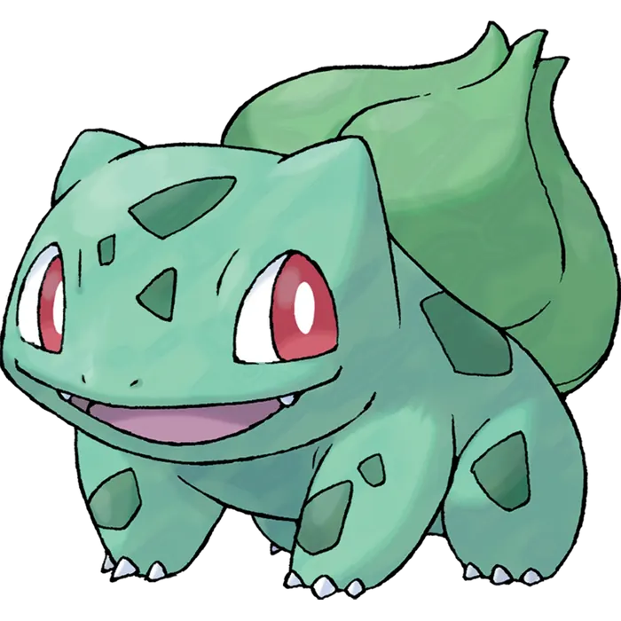
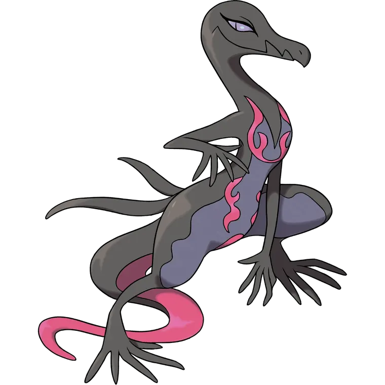
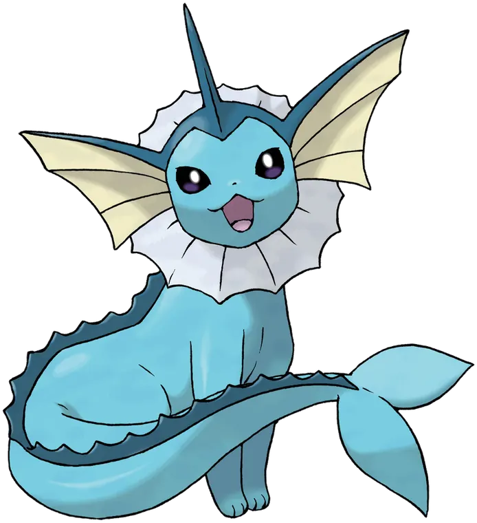

O que é
A pokecare é uma empresa de cosméticos veganos. Cria produtos de pele e cabelo com embalagens colecionáveis e aparência suave.
Portfólio digital ISO 9001
Cosméticos lúdicos com estética delicada, controle de qualidade e cuidado pensado para pele, cabelo e rotina jovem.
Empresa
A pokecare é uma empresa de cosméticos veganos. Cria produtos de pele e cabelo com embalagens colecionáveis e aparência suave.
Atua em skincare jovem, higiene pessoal, kits presenteáveis e linhas temáticas para autocuidado diário.
Jovens de 12 a 25 anos. Pessoas que buscam produtos seguros, bonitos, acessíveis e fáceis de usar.
Linha inicial

Sabonete facial em espuma com textura leve, visual verde transparente e sensação refrescante. Limpa sem pesar, com notas de capim limão e frutas cítricas para uma rotina fresca.
Código: PCBS001 | Controle: pH e espuma
Perfume fixador de maquiagem com acabamento luminoso e brilho dourado delicado. Ajuda a manter a produção no lugar, com odor neutro para não competir com outros aromas.
Código: PBSZ0758 | Controle: fixação e brilho
Creme hidratante com ácido hialurônico para reforçar a sensação de pele macia e viçosa. Combina frescor aquático com fragrância de pera, limão e jasmim.
Código: PBVP0134 | Controle: hidratação e fragrânciaPolítica da Qualidade
A pokecare se compromete a garantir a qualidade, a segurança e os efeitos dos produtos, buscando satisfação do cliente e melhoria contínua.
A empresa usa embalagens acessíveis, ingredientes com menor impacto ambiental e uma política sem testes em animais.

O cliente guia produto, atendimento e melhoria.

Cada lote tem registro, controle e responsável.

Pessoas seguem padrão de higiene, inspeção e envase.

Indicadores mostram erros, avanços e riscos.

A empresa corrige falhas e evolui seus processos.
Responsabilidade
Embalagens simples de abrir, seguras para uso jovem e pensadas para reduzir barreiras de acesso.
Ingredientes escolhidos para evitar toxicidade ao meio ambiente e reduzir impacto no descarte.
A pokecare não realiza testes em animais e prioriza métodos de avaliação seguros e responsáveis.
A pokecare mantém identidade própria, comunicação responsável e atenção a direitos autorais, marcas registradas e normas do setor.
Pilares da política
Produto deve cumprir o que promete.
Cliente deve receber cuidado claro, seguro e confiável.
Embalagem deve ser bonita, funcional e acessível.
Produto deve evitar testes em animais e danos ambientais.
Objetivos da Qualidade
| Objetivo | Indicador | Meta | Prazo |
|---|---|---|---|
| Reduzir reclamações | % de reclamações por pedidos | Menos de 2% | 6 meses |
| Aprovar lotes na primeira análise | Lotes aprovados sem retrabalho | 95% ou mais | 4 meses |
| Entregar no prazo | Pedidos entregues dentro do prazo | 90% ou mais | 5 meses |
| Treinar equipe | Horas de treinamento por pessoa | 8 horas por trimestre | 3 meses |
| Garantir embalagens acessíveis | % de embalagens aprovadas em teste de uso | 98% ou mais | 4 meses |
| Reduzir impacto ambiental | % de fórmulas com ingredientes não tóxicos ao ambiente | 100% | 6 meses |
| Manter política sem testes em animais | Fornecedores com declaração cruelty free | 100% | Contínuo |
Recursos
Produção, qualidade, atendimento, marketing e compras. Todos treinados em higiene, registro e inspeção.
Laboratório, sala de mistura, envase, estoque limpo e bancada de inspeção final.
Balanças calibradas, pHmetro, termômetros, misturadores, EPIs, etiquetas e planilhas.
Espaço limpo, ventilado e separado por matéria-prima, produção e produto acabado.
Planejamento Operacional
Separar reclamações por atraso, embalagem, cheiro, textura ou alergia.
Conferir validade, lacre, aparência, rótulo e lote antes do envio.
Padronizar produção, atendimento, rastreio e resposta ao cliente.
Acompanhar o indicador todo mês. Corrigir se passar de 2%.